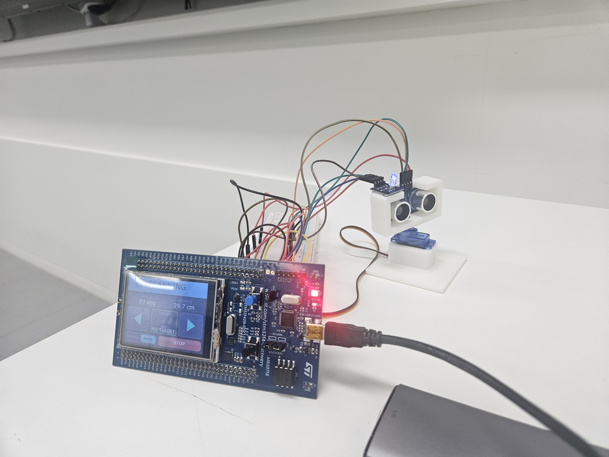
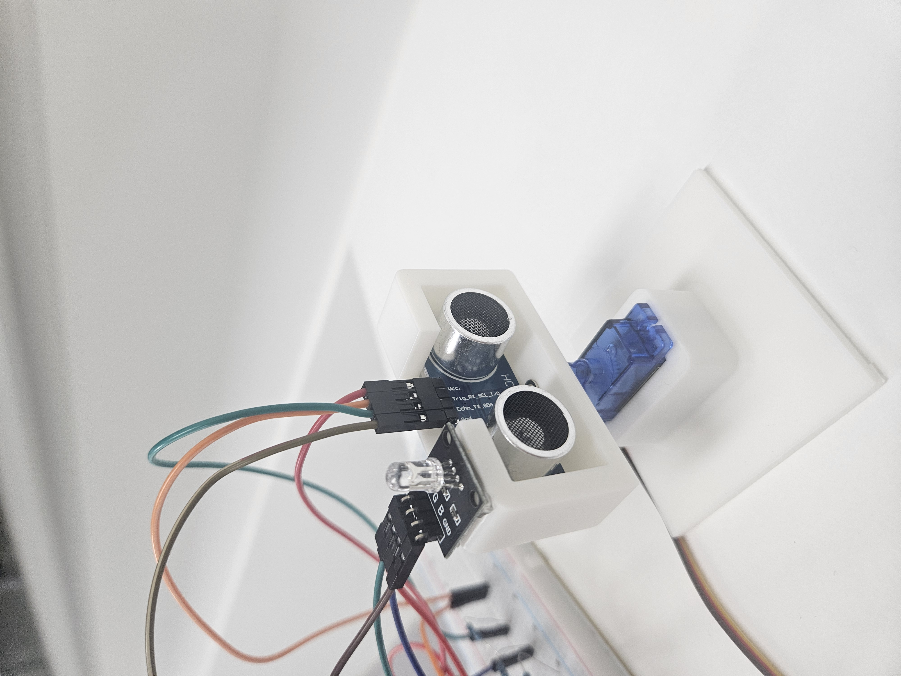

한 각도의 거리 변화만으로는 실제 물체와 단발 이상치 구분 곤란
EMBEDDED SOFTWARE, REAL-TIME SYSTEM
STM32 기반 초음파 표적 탐지 및 추적
HC-SR04 한 개를 서보모터로 왕복 구동해 각도별 거리 프레임을 만들고, 공간 연속성과 반복 검증을 통과한 접근 물체만 표적으로 확정한 FreeRTOS 개인 프로젝트입니다.
- 기간
- 2026.06–2026.08
- 플랫폼
- STM32F429, HC-SR04, SG90
- 담당
- 개인 프로젝트, 전체 설계와 구현
- 기술
- C, FreeRTOS, HAL, TouchGFX

STM32F429I-DISC1, TouchGFXHC-SR04 초음파 센서SG90 서보모터RGB LED01 / PURPOSE
구현 목표
단일 거리 측정값을 화면에 표시하는 데서 끝내지 않고, 제한된 센서와 MCU 자원으로 주변 탐색부터 표적 확정, 추적, 소실 판정, 재탐색까지 하나의 운용 사이클로 완성하는 것이 목표였다.
이동 중 측정 시 실제 각도와 거리 데이터의 시점 불일치
여러 기능이 GPIO와 타이머를 동시에 제어할 가능성
스캔, 추적, 소실 상태와 거리값의 실시간 표시 필요
02 / ARCHITECTURE
RTOS 구조
INPUTTouchGFXHC-SR04 Echo
CONTROLScanControllerTask상태전이와 전체 순서 관리
WORKERSServoTaskUltrasonicTaskTrackingTaskLedTask
OUTPUTPWM / GPIOGUI / UART
- 태스크Scan, Servo, Ultrasonic, Tracking, Led의 다섯 실행 주체 분리
- 메시지요청과 응답을 열 개 큐로 전달하고 sequence 번호로 매칭
- 제어권하드웨어별 전용 태스크만 GPIO, PWM, 입력 캡처 접근
- GUI 정책밀린 상태는 폐기하고 가장 최근 상태만 TouchGFX에 반영
03 / STATE MACHINE
탐지와 추적 흐름
운용 상태STOPPED, MANUAL은 자동 탐지 흐름과 별도의 사용자 운용 상태
04 / DEMO
통합 동작
05 / EVIDENCE
기능별 결과




[FRAME COMPLETE] number=19 direction=FORWARD
[DISTANCE] 20 deg = 9.1 cm
30 deg = 9.8 cm
40 deg = 10.6 cm
...
160 deg = 24.5 cm
[FRAME SUMMARY] valid=15/15
[COMPARE] frame 17 FORWARD <-> frame 19 FORWARD
delta_mm = previous - current초음파 센서가 좌우로 탐색하는 전체 각도 범위
10도 간격으로 한 프레임에 취득한 거리값 개수
15개 각도에서 모두 Echo 응답을 받은 정상 프레임
스캔 방향이 같은 프레임끼리 비교해 동일 각도의 접근 변화량 계산
06 / DESIGN DECISIONS
오동작을 줄인 네 가지 설계
서보가 멈춘 뒤 측정
SG90에는 실제 각도 피드백이 없으므로 PWM 변경 직후가 아니라 100 ms 안정화 뒤 Echo를 취득했다.
표시 각도와 거리 측정 시점을 일치같은 방향 프레임끼리 비교
정방향과 역방향 스캔의 시간차를 섞지 않고, 동일 각도의 거리 변화만 계산했다.
접근 물체의 변화량을 일관되게 판단공간 연속성과 반복 측정 결합
인접한 두 각도에서 변화가 이어질 때만 후보로 만들고, 같은 위치에서 3회 중 2회 확인되면 표적으로 확정했다.
넓은 빔과 단발 반사에 의한 오탐 억제화면에는 최신 상태만 전달
GUI 큐가 밀리면 오래된 화면 데이터를 버리고 현재 상태를 우선 반영했다.
실제 센서 동작과 TouchGFX 표시의 지연 방지서보 위치 피드백이 없어 PWM 변경 후 안정화 시간을 둔 뒤 초음파 Echo를 취득했습니다. 스캔 주기에서는 서보 안정화 시간이 주요 지연 요소였습니다.
07 / RESULT
완성 범위
7
운용 상태 구현
SCANNING, CANDIDATE, DETECTED, TRACKING, LOST, STOPPED, MANUAL
- 센서 드라이버HC-SR04 입력 캡처와 거리 환산, SG90 PWM 제어
- 실시간 구조FreeRTOS 태스크와 큐, 타임아웃, sequence 응답 매칭
- 판단 로직왕복 프레임 비교, 접근 후보 검증, 표적 추적과 소실 판정
- 운용 화면TouchGFX AUTO, MANUAL, START, STOP 명령과 상태 표시
- 검증 근거동작 영상, 상태별 화면, UART 왕복 스캔 로그 확보